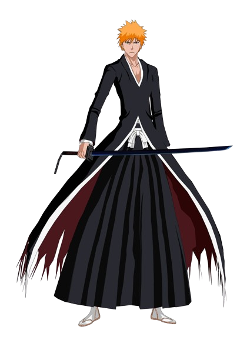

Ichigo Kurosaki
Ichigo Kurosaki was a regular highschooler before meeting Rukia Kuchiki. He eventually become a substitute Shinigami that fights to protect evil forces that threaten them.

Ichigo Kurosaki was a regular highschooler before meeting Rukia Kuchiki. He eventually become a substitute Shinigami that fights to protect evil forces that threaten them.